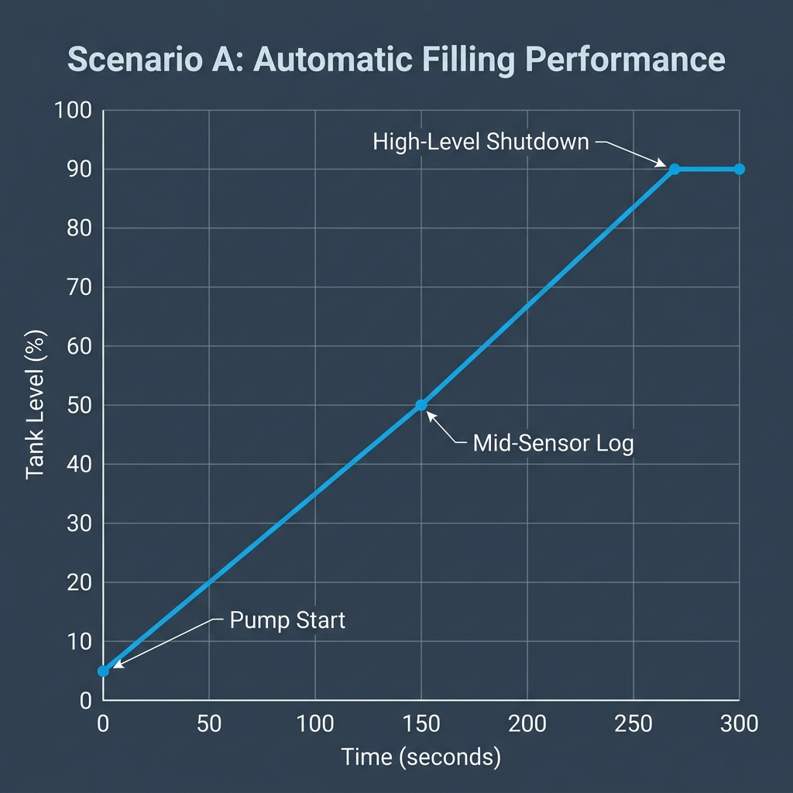

Defence Technology (Navy)
Ballast Water Tank System & PLC Control

Empty tank fill-test. Shutdown at 91%.
Maintain level against 2m³/h outlet flow. Observe duty cycle.
Injects sensor failures and stuck valve. Requires manual operator recovery for F03.
| Signal | PLC Addr | State |
|---|---|---|
| Low Level Sensor (10%) | I 0.0 | □ OFF |
| Mid Level Sensor (50%) | I 0.1 | □ OFF |
| High Level Sensor (90%) | I 0.2 | □ OFF |
| Pump Motor | Q 0.0 | □ OFF |
| Outlet Solenoid (NC) | Q 0.1 | □ OFF |
| Alarm Beacon | Q 0.2 | □ OFF |
